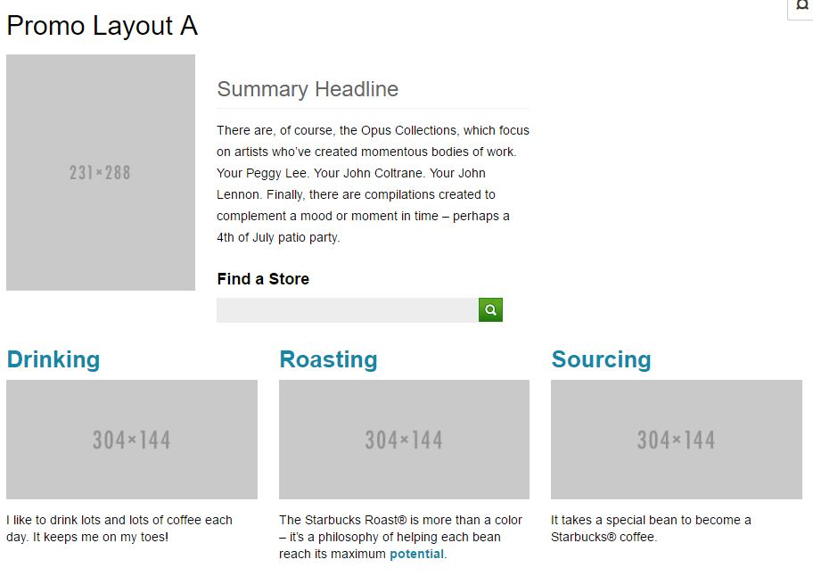
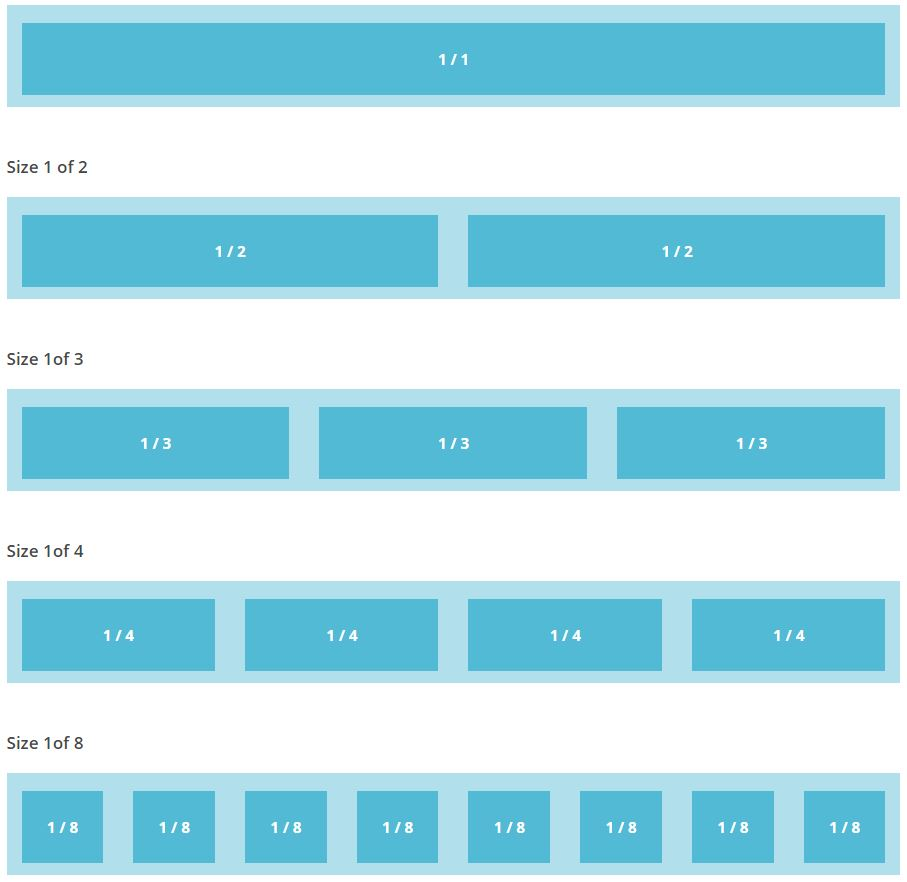

Layouts and Grids
One of the most important part, is the layout and grid of the webpage.
Here is an example of a webpage layout, With the search button in the centre, and images with written comment placed at the bottom, the viewers can easily locate all the useful information at the bottom.
the Primary image with the summary headline at the top, it can easily catch the attention of the viewer to inform them of what the page will be mostly made up of.
Grids
Below are some examples of grids and how much space they take up and what space they take up. Each grid with full templates is less than 1kb, and can stack infinitely. Grids can only control width, whereas height is controled by content.
1/1
Grid example 1
1/2
1/2
Grid example 2
Grid example 3
Here we have a range of grides, ranging from 1/1 all the way to 1/8. you can see the difference in size and width.
This grid is made up of 15px padding on both sides, with 30px of gutter between each collum. There is also 15px gutter on the grid edges.

This grid layout is made so that it is easily extendable by nesting and mixing different grid sizes together.